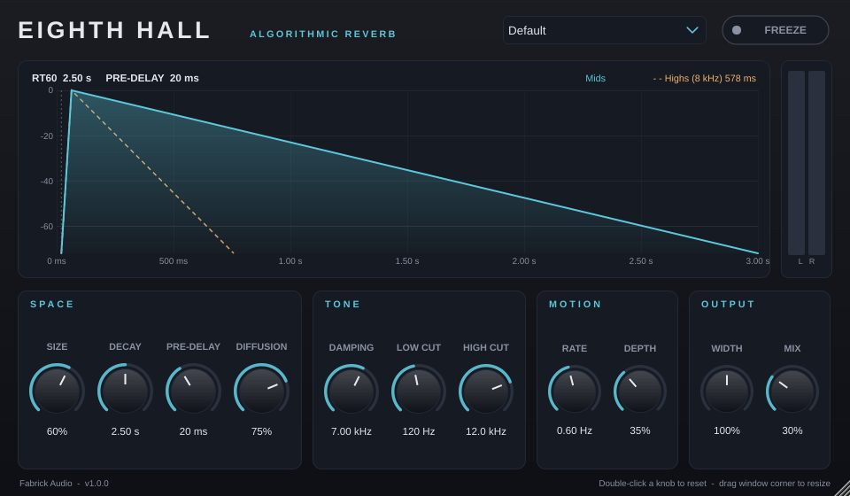
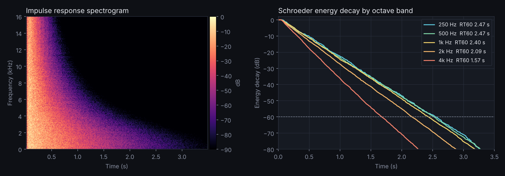

An algorithmic reverb I designed and coded from scratch in C++: smooth, dense tails from tight rooms to endless ambient washes.

This is the plugin's real reverb engine running live in the page. Pick a sound, press play and turn the controls. Use headphones for the best stereo picture.
Double-click a slider to reset it.
The Decay knob sets RT60 directly. Measured accuracy is within about 2% at every sample rate from 44.1 to 192 kHz.
Eight cross-coupled, gently modulated delay lines build a dense, smooth tail that flatters drums, vocals and plucks.
Damping inside the loop lets highs die faster than lows, like a real room. Low and High Cut keep the reverb out of the way.
Hold the current tail forever for pads, risers and transitions.
A live graph shows pre-delay, build-up and the decay of mids and highs as you turn the knobs.
Under 1% of one core per instance, so you can use it on every bus.
The DSP engine is plain C++20 written from scratch (no stock reverb), wrapped in JUCE for the plugin formats. It's tested the way I used to QA studio hardware: feed it known signals and measure what comes out.
Feedback delay network with a lossless Householder matrix, cubic Hermite interpolation and per-line damping.
Passes Tracktion's pluginval at maximum strictness, Steinberg's VST3 validator and Apple's auval on every commit.
GitHub Actions builds, tests and packages Windows, macOS universal and Linux releases automatically.
No memory allocation or locks on the audio thread, lock-free GUI metering, smoothed automation and denormal protection.

| Automated test | Result |
|---|---|
| Decay accuracy (1 kHz band, 0.5 to 6 s) | within 0.6 to 2.1% |
| Sample-rate independence (44.1 to 192 kHz) | 1.98 to 1.99 s for a 2.0 s setting |
| Stress test: 200 randomized runs with automation | stable, no NaN/Inf |
| Mix at 0% | bit-transparent |
| Stereo decorrelation (mono in) | L/R correlation -0.05 |
| CPU (48 kHz stereo) | about 110x faster than real time |
Copy Eighth Hall.vst3 to C:\Program Files\Common Files\VST3 and rescan in your DAW.
Copy the VST3 to ~/Library/Audio/Plug-Ins/VST3 and the AU to .../Components. See the install guide for the one-time security step.
Copy the VST3 to ~/.vst3 or the LV2 to ~/.lv2.